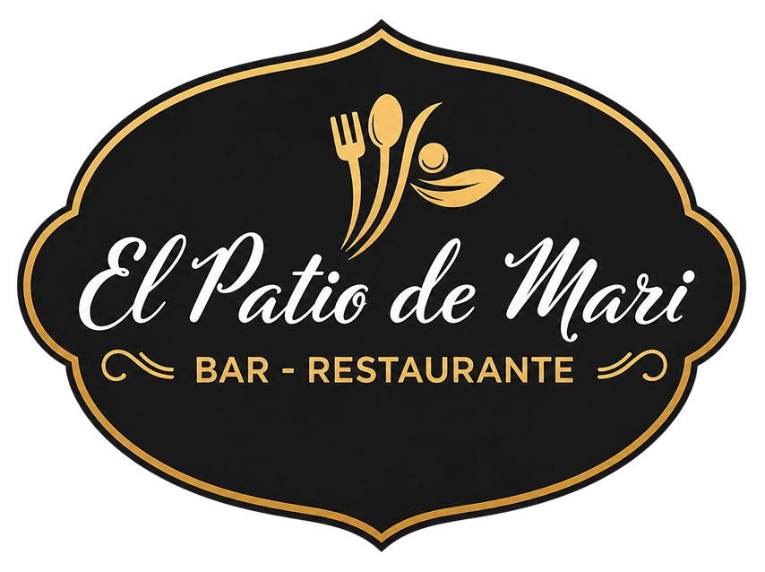
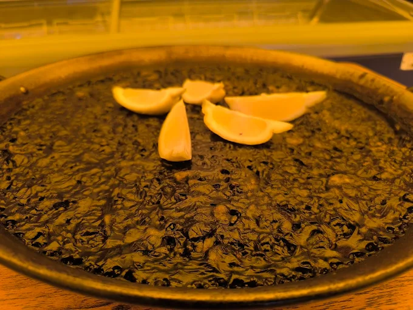
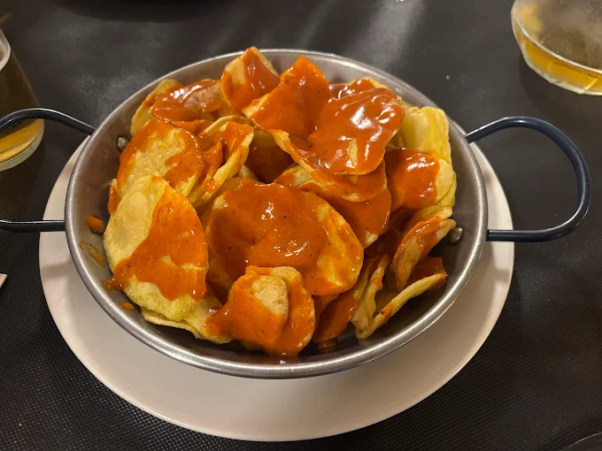
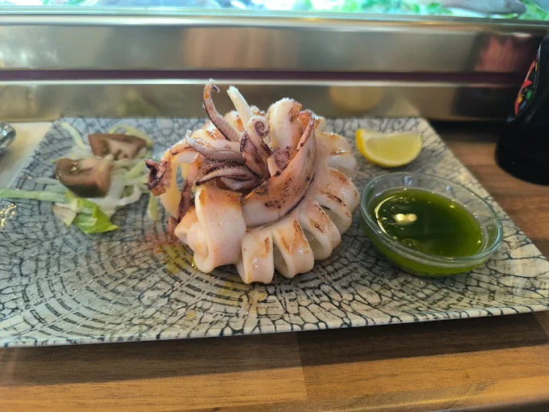
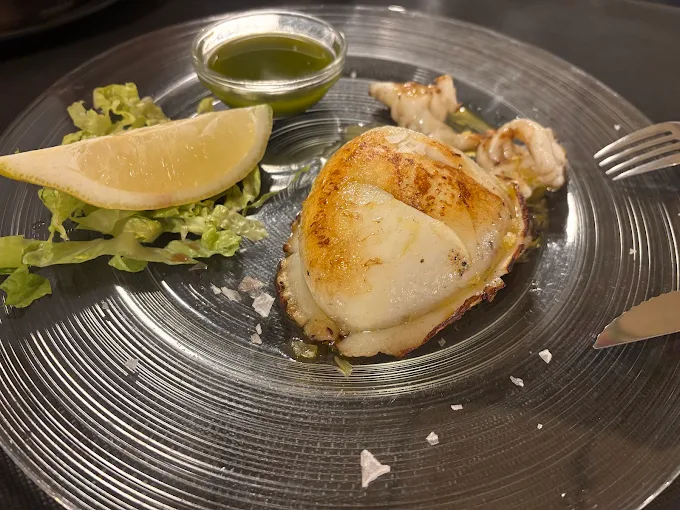
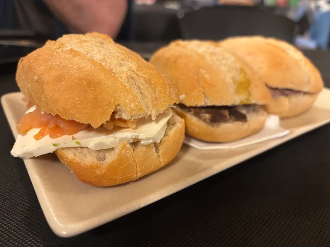

Cocina honesta con alma mediterránea.
Tapas, arroces y platos de siempre en un patio con carácter.


Nuestra historia
En El Patio de Mari somos una familia criada entre fogones y el ir y venir del bar de pueblo.
Todo lo que sale de nuestra cocina es casero, hecho con las manos y el corazón, uniendo tradición con toques frescos sin perder el sabor de siempre.
Pasa, siéntate y disfruta: aquí se cocina como en casa… pero con un poquito más de duende.
Lo que servimos
Nuestro espacio
Azulejos, hierro forjado, luz mediterránea y el olor a cocina de siempre

Un espacio con alma propia

Sabores de la tierra
Tradición en cada bocado

Nuestro rincón más especial
Por qué elegirnos
Azulejos tradicionales, estructura de hierro forjado y vegetación que recrea el espíritu del patio mediterráneo.
Trabajamos con proveedores locales. Siempre con el mejor producto de la zona y la temporada.
Un negocio de toda la vida ideal para celebraciones en familia, con amigos o en pareja.
Selección de vinos alicantinos y valencianos a precio honesto, maridados con nuestra cocina.
"Cocina de siempre con un toque moderno. Todo casero y muy sabroso. Se nota el cuidado en cada detalle."— Reseña de Google Maps
"Una experiencia gastronómica fantástica. Las tapas combinan tradición con un toque creativo."
"La comida es casera y muy sabrosa. Volveremos sin duda, trato muy amable y precios justos."
Visítanos